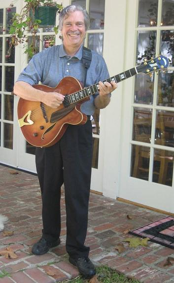

Alan Kay

El 17 de mayo de 2010 Alan Kay cumplió 70 años, y sus amigos le regalaron un libro de ensayos, escritos por amigos de él y gente que ha trabajado con él en distintos campos. Alan Kay es un verdadero polímata, un artista, en el sentido descrito por Leon Batista Alberti: ".. el artista en este contexto social no debe ser un simple artesano, sino un intelectual preparado en todas las disciplinas y en todos los terrenos."
Alan Kay dijo “la mejor forma de predecir el futuro es creándolo”, e inventó el notebook, la interfaz gráfica de usuario (GUI), la metáfora de la manipulación directa, la programación orientada a objetos, uno los investigadores más importantes de Xerox PARC, el hombre que Steve Jobs quería llevarse para revolucionar el mercado de los computadores personales.
Alan Kay estudió matemáticas y biología molecular en la decada de 1960, y mientras estudiaba ejercía de guitarrista profesional de Jazz. En 1966 empezó a estudiar informática y fue en ese año, el 11 de noviembre de 1966 (el día en que yo nací) que Alan Kay tuvo una misteriosa epifanía que lo llevó a desarrollar el concepto de programación orientada al objeto (término que él acuño):
“En 1966, la cosa que me golpeó fue que Sketchpad estaba manteniendo relaciones dinámicas. Esa es la clave para construir sistemas grandes. La otra cosa que sucedió en 1966 fue al pensar sobre ARPANet. La idea de tener a millones de máquinas sin un control central. Simula nos proporcionó una forma de programación similar a lo que Sketchpad estaba haciendo. Mi formación en biología y matemáticas me hacía pensar en algebra y tejidos. Barton me enseñó que “el principio básico del diseño recursivo es hacer a las partes tan poderosas como el todo”. Estas ideas me llevaron a una visión, el 11 de noviembre de 1966: la gente que trabaja en timesharing (tiempo compartido) lo hizo bien con los procesos, pero eso era demasiado grande.
Lo interesante sobre la idea de objeto es que está en todas partes. La perversidad de la ciencia es que el mundo no cambia porque tenemos una perspectiva diferente de él.
El secreto del éxito de PARC fue diseñar la mejor máquina virtual que podíamos y después construir el hardware que la optimizaba. Hemos mantenido ese concepto hasta hoy día.” (tomado de esta transcripción de una charla de Alan Kay)
Alan Kay es quizás uno de los personajes más revolucionarios en la informática, si tienen un tiempo les sugiero leer los ensayos que sus amigos escribieron sobre él, hay personas como el productor musical Quincy Jones, Vint Cerf (uno de los padres de internet), Nicolás Negroponte, Ivan Sutherland, John Sculley y varios personajes importantes que han tenido la oportunidad de trabajar con este gran hombre.